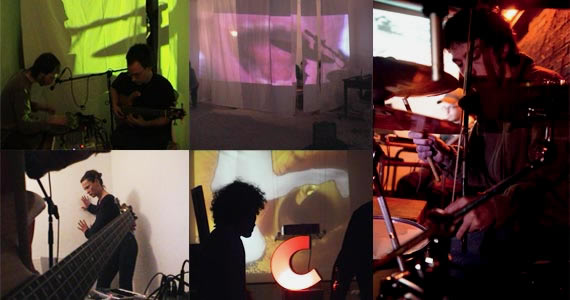

2010. EN BUSCA DEL PASTO. Todos los contenidos de esta web están bajo licencia "by-sa 3.0" de
En Busca Del Pasto (EBDP) nació el verano de 2003 como un proyecto de estricta improvisación musical (subrayando el carácter de “estricta”), y esto ha estado a la base de todo su posterior desarrollo, siempre indagando en los diversos aspectos que circundan el acto de improvisar. Ahora bien, sería muy importante asumir desde un principio que tal indagación se ha efectuado siempre desde la perspectiva del “juego”, enfrentándose al fenómeno artístico por su dimensión lúdica, quizá incluso terapéutica; y toda reflexión estética o filosófica ha venido después, como forma de conceptuar los juegos para ser comprendidos y mostrar su relevancia.
Desde el punto de vista musical, se ha seguido una línea de experimentación e investigación sonora, recurriendo a todo tipo de instrumentos, máquinas y objetos, sin atender a reglas estándar de composición ni ejecución instrumental, prescindiendo enteramente de patrones rítmicos o armónicos preestablecidos, y sin pactar entre los miembros un criterio musical determinado... Todo ha de suceder siempre espontáneamente. Lo que se persigue con ello es la construcción de duraciones musicales llenas de matices y cambios, inestables e imprevisibles, en las que tienen cabida tanto el acierto como el error, tanto lo bello como lo feo, lo que a nosotros mismo nos gusta y lo que no... ¡Como la vida misma! ¡Nada es superfluo!
Por otro lado, el contexto en que se hallan los improvisadores es también muy determinante en el resultado de su actuación. Por ello, EBDP ha trabajado también sobre los contextos en que su música vive cada vez. Esto se ha hecho, bien mediante la proyección de vídeos sobre el escenario, bien recurriendo a atrezos teatrales para disfrazar el escenario, bien sacando el escenario a lugares poco habituales (como la calle, el campo, una ruina en un descampado, la sala de un museo...), etc.. Con todo ello, se ha ido enriqueciendo el proyecto con elementos extra-musicales, de carácter visual y performativo.
En esta línea hacia lo multidisciplinar, EBDP desarrolló en otoño de 2007 su juego “Pasto en Escena”, donde los improvisadores no tienen preestablecido siquiera un lugar sobre el escenario, ni una vestimenta, teniendo que improvisarlo todo, incluyendo la pose, el gesto, etc. Se pretende así, por tanto, teatralizar la improvisación musical, dando ya entrada en el escenario a todo tipo de “acciones”.
Ni que decir tiene, EBDP no cesa de inventar juegos, con los que alimentarse para seguir evolucionando. Esto es otra forma de decir que la búsqueda nunca se termina. Que el “Pasto” nunca se encuentra. Que lo importante es, en sí, la búsqueda.